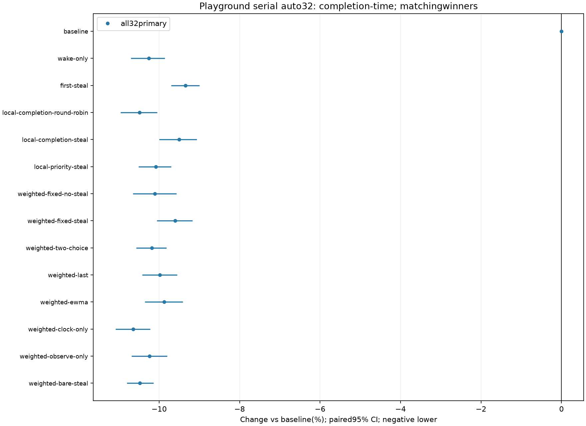
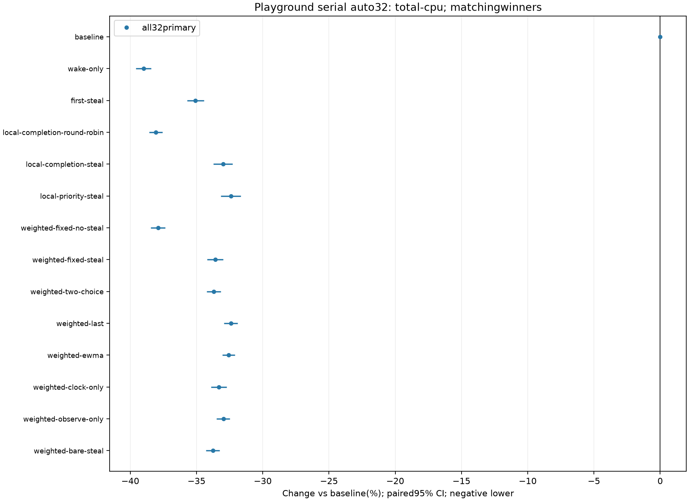

Stopped by user after Playground32seeds x14designs =448serial/unrestricted-auto32 games. No Oazis, concurrent waves, host-throughput or56full-game-checksum continuation. Timing telemetry intentionally Off; empty checksum_files/observed_checksum null means winner/tick outcome agreement only, not448whole-game checksum proof.280boundedper-tick qualification contexts remain separate. Two baseline engine failures remain failures acrossall14roles: ResourceGrowth historical payload rejection(3events) and TurretTargeting overlapping publication entries-empty(1event);160otherselectedenginecases passedperrole. Original bare-steal suite timeout180s remains unexplained despite subsequent nonreproduction/requalification. Historical firststaticRR/strict-affinity failures are distinct from the current local-completionRR research arm, which passed bounded checks. OneLinuxhost, no all-platform/nativefeel proof; manyexploratory pairedcomparisons lackfamilywisecontrol. Primaryall32 retained. A regular administrative sentinel file blocks firstOazis output-directory admission beforePopen afterallPGreceipts/windows/pairs commit. No PGgame/parent pause or administrative signal was applied; rejected SIGSTOP drafts were never launched. All32seed results retained without sensitivity exclusions. CIs are10000pairedseed MonteCarlo draws, floorquantiles, fixedseed605441; conditionalmatchingwinners, caps separate.
448rawgames · Allmetrics/pairedmeans/CIs · Rawaudit
| Role | Winners | Caps | Pairs | AllwinnerE2Eseconds | PairedE2Echange | AllwinnerCPU-seconds | PairedCPUchange | AdverseE2Eseeds | AdverseCPUseeds |
|---|---|---|---|---|---|---|---|---|---|
| baseline | 32 | 0 | 32 | 35.34 | 0.00% [0.00, 0.00] | 159.48 | 0.00% [0.00, 0.00] | 0 | 0 |
| wake-only | 32 | 0 | 32 | 31.71 | -10.26% [-10.71, -9.86] | 97.31 | -38.98% [-39.57, -38.42] | 0 | 0 |
| first-steal | 32 | 0 | 32 | 32.04 | -9.35% [-9.70, -9.00] | 103.54 | -35.07% [-35.70, -34.44] | 0 | 0 |
| local-completion-round-robin | 32 | 0 | 32 | 31.63 | -10.49% [-10.96, -10.05] | 98.77 | -38.06% [-38.58, -37.56] | 0 | 0 |
| local-completion-steal | 32 | 0 | 32 | 31.98 | -9.50% [-10.00, -9.07] | 106.85 | -33.00% [-33.74, -32.27] | 0 | 0 |
| local-priority-steal | 32 | 0 | 32 | 31.78 | -10.08% [-10.51, -9.70] | 107.80 | -32.40% [-33.17, -31.67] | 0 | 0 |
| weighted-fixed-no-steal | 32 | 0 | 32 | 31.77 | -10.11% [-10.65, -9.57] | 99.03 | -37.90% [-38.47, -37.36] | 0 | 0 |
| weighted-fixed-steal | 32 | 0 | 32 | 31.95 | -9.60% [-10.06, -9.17] | 105.93 | -33.58% [-34.19, -32.98] | 0 | 0 |
| weighted-two-choice | 32 | 0 | 32 | 31.74 | -10.18% [-10.57, -9.82] | 105.75 | -33.69% [-34.22, -33.16] | 0 | 0 |
| weighted-last | 32 | 0 | 32 | 31.81 | -9.98% [-10.42, -9.56] | 107.82 | -32.39% [-32.94, -31.90] | 0 | 0 |
| weighted-ewma | 32 | 0 | 32 | 31.85 | -9.88% [-10.36, -9.41] | 107.52 | -32.58% [-33.06, -32.11] | 0 | 0 |
| weighted-clock-only | 32 | 0 | 32 | 31.58 | -10.64% [-11.08, -10.22] | 106.36 | -33.31% [-33.91, -32.72] | 0 | 0 |
| weighted-observe-only | 32 | 0 | 32 | 31.72 | -10.24% [-10.68, -9.80] | 106.91 | -32.96% [-33.50, -32.48] | 0 | 0 |
| weighted-bare-steal | 32 | 0 | 32 | 31.64 | -10.48% [-10.81, -10.14] | 105.64 | -33.76% [-34.28, -33.26] | 0 | 0 |

